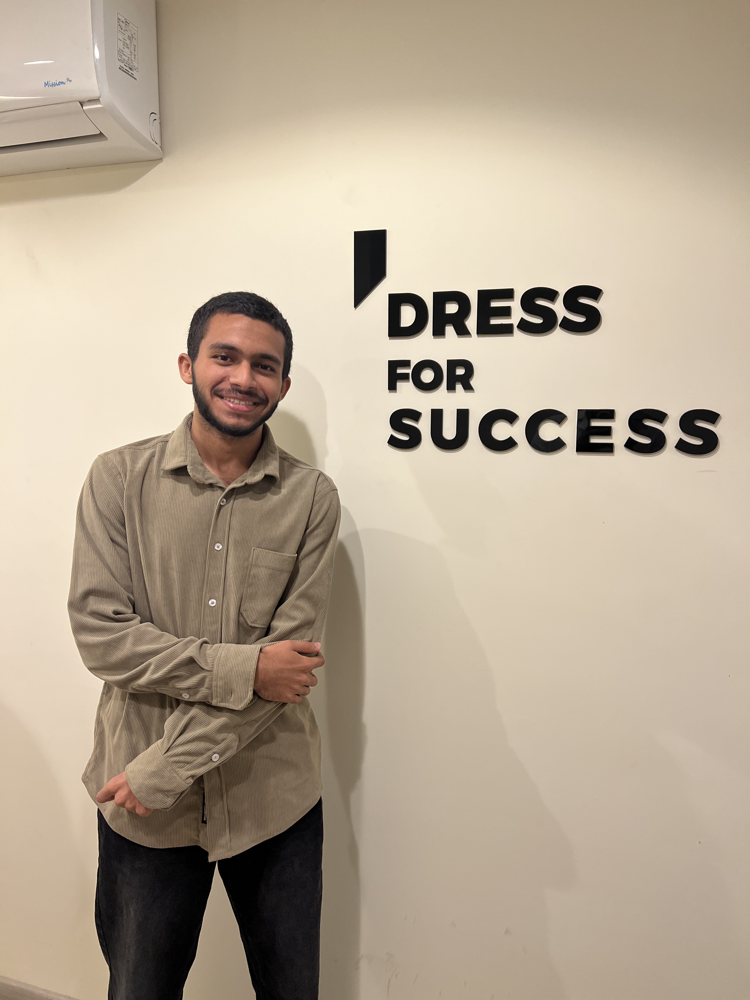

A performance marketer / media buyer with hands-on experience managing Meta advertising campaigns across e-commerce, fashion, education, B2B, and local businesses — combined with a growing understanding of broader marketing strategy, business economics, analytics, and customer acquisition. Backed by a Computer Science background, which keeps every decision data-first.

I manage Meta, TikTok, and Google Ads campaigns end-to-end — strategy, budget allocation, creative testing, audience targeting, and performance reporting — with the goal of improving ROI, not just impressions.
My background is Computer Science at Cairo University, which shapes how I approach media buying: as a data problem first. I look for patterns in cost-per-result, structure campaigns to isolate variables, and report performance the way I'd document any analysis — clearly, and backed by numbers.
I've run campaigns across very different account types — a high-spend e-commerce brand, multi-branch academy launches, fashion, and B2B — which means I've had to adapt targeting and creative strategy to very different buyer journeys, not apply one playbook everywhere.